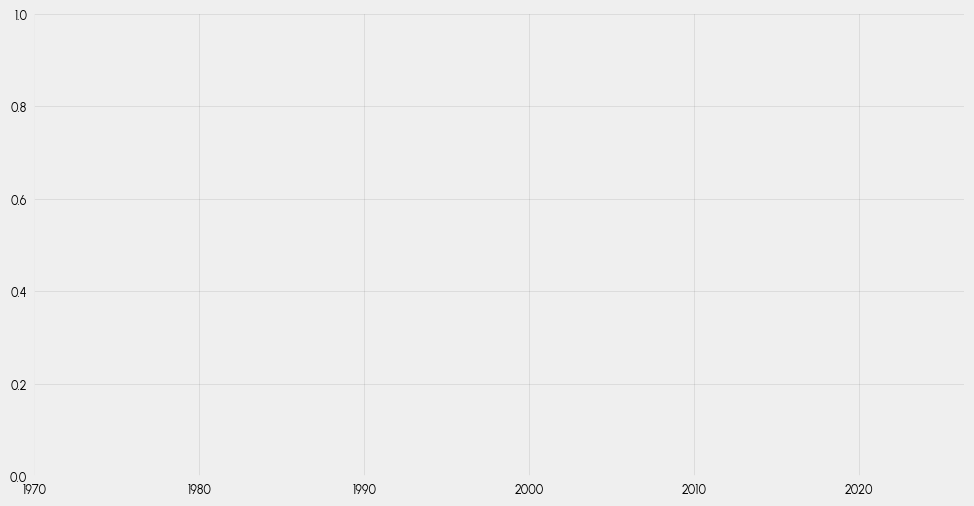
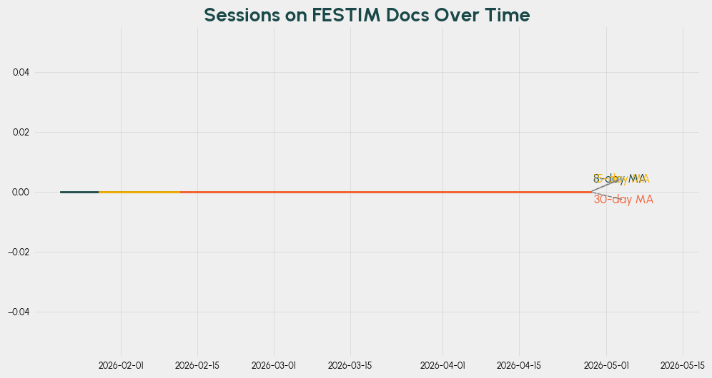

Demographics#
import numpy as np
import pandas as pd
import geopandas as gpd
from datetime import datetime
# visualization
import matplotlib.pyplot as plt
import matplotlib.gridspec as gridspec
# geospatial manipulation
import cartopy.crs as ccrs
from src.data_fetching.fusion_energy_base import (
get_fusion_machine_developers,
get_research_organizations,
aggregate_data,
)
from src.data_fetching.google_analytics import (
run_report
)
from src.geospatial.geocoding import find_locations_from_cache
from src.plotting.maps import plot_europe, plot_locations
proj = ccrs.Mercator()
url = "https://raw.githubusercontent.com/holtzy/The-Python-Graph-Gallery/master/static/data/all_world.geojson"
world = gpd.read_file(url)
world = world[~world["name"].isin(["Antarctica", "Greenland"])]
world = world.to_crs(proj.proj4_init)
fusion_machine_developers_data = aggregate_data(get_fusion_machine_developers())
research_organizations_data = aggregate_data(get_research_organizations())
locations_orgs = find_locations_from_cache(
research_organizations_data, "locations_cache.geojson"
)
locations_fusion_developers = find_locations_from_cache(
fusion_machine_developers_data, "locations_cache.geojson"
)
start_date_ga = datetime(2026, 1, 14)
end_date_ga = datetime.today()
FESTIM_DOCS_ID = "521295665"
FESTIM_TUTO_ID = "521287230"
response = run_report(start_date_ga, end_date_ga, FESTIM_DOCS_ID)
# Convert response to a full dataframe
data_docs = []
for row in response.rows:
dim_vals = [d.value for d in row.dimension_values]
met_vals = [float(m.value) for m in row.metric_values]
data_docs.append(dim_vals + met_vals)
df_users = pd.DataFrame(data_docs, columns=["city", "country", "activeUsers", "newUsers", "sessions", "engagementRate", "userEngagementDuration"])
---------------------------------------------------------------------------
DefaultCredentialsError Traceback (most recent call last)
Cell In[4], line 6
2 end_date_ga = datetime.today()
3 FESTIM_DOCS_ID = "521295665"
4 FESTIM_TUTO_ID = "521287230"
5
----> 6 response = run_report(start_date_ga, end_date_ga, FESTIM_DOCS_ID)
7 # Convert response to a full dataframe
8 data_docs = []
9 for row in response.rows:
File ~/work/pose/pose/src/data_fetching/google_analytics.py:33, in run_report(start_date_ga, end_date_ga, property_id, daily)
30 def run_report(
31 start_date_ga, end_date_ga, property_id="YOUR-GA4-PROPERTY-ID", daily=False
32 ):
---> 33 client = BetaAnalyticsDataClient()
35 dimensions = [Dimension(name="date")] if daily else []
36 dimensions += [
37 Dimension(name="city"),
38 Dimension(name="country"),
39 ]
File /usr/share/miniconda/envs/pose-env/lib/python3.14/site-packages/google/analytics/data_v1beta/services/beta_analytics_data/client.py:718, in BetaAnalyticsDataClient.__init__(self, credentials, transport, client_options, client_info)
709 transport_init: Union[
710 Type[BetaAnalyticsDataTransport],
711 Callable[..., BetaAnalyticsDataTransport],
(...) 715 else cast(Callable[..., BetaAnalyticsDataTransport], transport)
716 )
717 # initialize with the provided callable or the passed in class
--> 718 self._transport = transport_init(
719 credentials=credentials,
720 credentials_file=self._client_options.credentials_file,
721 host=self._api_endpoint,
722 scopes=self._client_options.scopes,
723 client_cert_source_for_mtls=self._client_cert_source,
724 quota_project_id=self._client_options.quota_project_id,
725 client_info=client_info,
726 always_use_jwt_access=True,
727 api_audience=self._client_options.api_audience,
728 )
730 if "async" not in str(self._transport):
731 if CLIENT_LOGGING_SUPPORTED and _LOGGER.isEnabledFor(
732 std_logging.DEBUG
733 ): # pragma: NO COVER
File /usr/share/miniconda/envs/pose-env/lib/python3.14/site-packages/google/analytics/data_v1beta/services/beta_analytics_data/transports/grpc.py:239, in BetaAnalyticsDataGrpcTransport.__init__(self, host, credentials, credentials_file, scopes, channel, api_mtls_endpoint, client_cert_source, ssl_channel_credentials, client_cert_source_for_mtls, quota_project_id, client_info, always_use_jwt_access, api_audience)
234 self._ssl_channel_credentials = grpc.ssl_channel_credentials(
235 certificate_chain=cert, private_key=key
236 )
238 # The base transport sets the host, credentials and scopes
--> 239 super().__init__(
240 host=host,
241 credentials=credentials,
242 credentials_file=credentials_file,
243 scopes=scopes,
244 quota_project_id=quota_project_id,
245 client_info=client_info,
246 always_use_jwt_access=always_use_jwt_access,
247 api_audience=api_audience,
248 )
250 if not self._grpc_channel:
251 # initialize with the provided callable or the default channel
252 channel_init = channel or type(self).create_channel
File /usr/share/miniconda/envs/pose-env/lib/python3.14/site-packages/google/analytics/data_v1beta/services/beta_analytics_data/transports/base.py:113, in BetaAnalyticsDataTransport.__init__(self, host, credentials, credentials_file, scopes, quota_project_id, client_info, always_use_jwt_access, api_audience, **kwargs)
106 credentials, _ = google.auth.load_credentials_from_file(
107 credentials_file,
108 scopes=scopes,
109 quota_project_id=quota_project_id,
110 default_scopes=self.AUTH_SCOPES,
111 )
112 elif credentials is None and not self._ignore_credentials:
--> 113 credentials, _ = google.auth.default(
114 scopes=scopes,
115 quota_project_id=quota_project_id,
116 default_scopes=self.AUTH_SCOPES,
117 )
118 # Don't apply audience if the credentials file passed from user.
119 if hasattr(credentials, "with_gdch_audience"):
File /usr/share/miniconda/envs/pose-env/lib/python3.14/site-packages/google/auth/_default.py:748, in default(scopes, request, quota_project_id, default_scopes)
740 _LOGGER.warning(
741 "No project ID could be determined. Consider running "
742 "`gcloud config set project` or setting the %s "
743 "environment variable",
744 environment_vars.PROJECT,
745 )
746 return credentials, effective_project_id
--> 748 raise exceptions.DefaultCredentialsError(_CLOUD_SDK_MISSING_CREDENTIALS)
DefaultCredentialsError: Your default credentials were not found. To set up Application Default Credentials, see https://cloud.google.com/docs/authentication/external/set-up-adc for more information.
df_users.sort_values("activeUsers", ascending=False).head(10)
---------------------------------------------------------------------------
NameError Traceback (most recent call last)
Cell In[5], line 1
----> 1 df_users.sort_values("activeUsers", ascending=False).head(10)
NameError: name 'df_users' is not defined
locations_users = find_locations_from_cache(
df_users, "locations_cache.geojson", update_cache=True
)
df_users_countries = df_users.groupby("country", as_index=False)["activeUsers"].sum()
df_users_countries.sort_values("activeUsers", ascending=False).head(10)
---------------------------------------------------------------------------
NameError Traceback (most recent call last)
Cell In[6], line 2
1 locations_users = find_locations_from_cache(
----> 2 df_users, "locations_cache.geojson", update_cache=True
3 )
4
5 df_users_countries = df_users.groupby("country", as_index=False)["activeUsers"].sum()
NameError: name 'df_users' is not defined
response_tutorials = run_report(start_date_ga, end_date_ga, FESTIM_TUTO_ID)
data_tuto = []
for row in response_tutorials.rows:
dim_vals = [d.value for d in row.dimension_values]
met_vals = [float(m.value) for m in row.metric_values]
data_tuto.append(dim_vals + met_vals)
df_tutorials = pd.DataFrame(data_tuto, columns=["city", "country", "activeUsers", "newUsers", "sessions", "engagementRate", "userEngagementDuration"])
s_to_min = 1/60
df_tutorials["engagementTimePerActiveUser"] = (df_tutorials["userEngagementDuration"] / df_tutorials["activeUsers"]) * s_to_min
locations_tutorials = find_locations_from_cache(
df_tutorials, "locations_cache.geojson", update_cache=True
)
df_tutorials.head(10)
---------------------------------------------------------------------------
DefaultCredentialsError Traceback (most recent call last)
Cell In[7], line 1
----> 1 response_tutorials = run_report(start_date_ga, end_date_ga, FESTIM_TUTO_ID)
2 data_tuto = []
3 for row in response_tutorials.rows:
4 dim_vals = [d.value for d in row.dimension_values]
File ~/work/pose/pose/src/data_fetching/google_analytics.py:33, in run_report(start_date_ga, end_date_ga, property_id, daily)
30 def run_report(
31 start_date_ga, end_date_ga, property_id="YOUR-GA4-PROPERTY-ID", daily=False
32 ):
---> 33 client = BetaAnalyticsDataClient()
35 dimensions = [Dimension(name="date")] if daily else []
36 dimensions += [
37 Dimension(name="city"),
38 Dimension(name="country"),
39 ]
File /usr/share/miniconda/envs/pose-env/lib/python3.14/site-packages/google/analytics/data_v1beta/services/beta_analytics_data/client.py:718, in BetaAnalyticsDataClient.__init__(self, credentials, transport, client_options, client_info)
709 transport_init: Union[
710 Type[BetaAnalyticsDataTransport],
711 Callable[..., BetaAnalyticsDataTransport],
(...) 715 else cast(Callable[..., BetaAnalyticsDataTransport], transport)
716 )
717 # initialize with the provided callable or the passed in class
--> 718 self._transport = transport_init(
719 credentials=credentials,
720 credentials_file=self._client_options.credentials_file,
721 host=self._api_endpoint,
722 scopes=self._client_options.scopes,
723 client_cert_source_for_mtls=self._client_cert_source,
724 quota_project_id=self._client_options.quota_project_id,
725 client_info=client_info,
726 always_use_jwt_access=True,
727 api_audience=self._client_options.api_audience,
728 )
730 if "async" not in str(self._transport):
731 if CLIENT_LOGGING_SUPPORTED and _LOGGER.isEnabledFor(
732 std_logging.DEBUG
733 ): # pragma: NO COVER
File /usr/share/miniconda/envs/pose-env/lib/python3.14/site-packages/google/analytics/data_v1beta/services/beta_analytics_data/transports/grpc.py:239, in BetaAnalyticsDataGrpcTransport.__init__(self, host, credentials, credentials_file, scopes, channel, api_mtls_endpoint, client_cert_source, ssl_channel_credentials, client_cert_source_for_mtls, quota_project_id, client_info, always_use_jwt_access, api_audience)
234 self._ssl_channel_credentials = grpc.ssl_channel_credentials(
235 certificate_chain=cert, private_key=key
236 )
238 # The base transport sets the host, credentials and scopes
--> 239 super().__init__(
240 host=host,
241 credentials=credentials,
242 credentials_file=credentials_file,
243 scopes=scopes,
244 quota_project_id=quota_project_id,
245 client_info=client_info,
246 always_use_jwt_access=always_use_jwt_access,
247 api_audience=api_audience,
248 )
250 if not self._grpc_channel:
251 # initialize with the provided callable or the default channel
252 channel_init = channel or type(self).create_channel
File /usr/share/miniconda/envs/pose-env/lib/python3.14/site-packages/google/analytics/data_v1beta/services/beta_analytics_data/transports/base.py:113, in BetaAnalyticsDataTransport.__init__(self, host, credentials, credentials_file, scopes, quota_project_id, client_info, always_use_jwt_access, api_audience, **kwargs)
106 credentials, _ = google.auth.load_credentials_from_file(
107 credentials_file,
108 scopes=scopes,
109 quota_project_id=quota_project_id,
110 default_scopes=self.AUTH_SCOPES,
111 )
112 elif credentials is None and not self._ignore_credentials:
--> 113 credentials, _ = google.auth.default(
114 scopes=scopes,
115 quota_project_id=quota_project_id,
116 default_scopes=self.AUTH_SCOPES,
117 )
118 # Don't apply audience if the credentials file passed from user.
119 if hasattr(credentials, "with_gdch_audience"):
File /usr/share/miniconda/envs/pose-env/lib/python3.14/site-packages/google/auth/_default.py:748, in default(scopes, request, quota_project_id, default_scopes)
740 _LOGGER.warning(
741 "No project ID could be determined. Consider running "
742 "`gcloud config set project` or setting the %s "
743 "environment variable",
744 environment_vars.PROJECT,
745 )
746 return credentials, effective_project_id
--> 748 raise exceptions.DefaultCredentialsError(_CLOUD_SDK_MISSING_CREDENTIALS)
DefaultCredentialsError: Your default credentials were not found. To set up Application Default Credentials, see https://cloud.google.com/docs/authentication/external/set-up-adc for more information.
Example map#
import morethemes as mt
import matplotlib.pyplot as plt
mt.set_theme("urban")
# https://coolors.co/1a4848-f7b000-f46036-c9f2c7-aceca1
plt.rcParams["axes.prop_cycle"] = plt.cycler(
color=["#1a4848", "#f7b000", "#f46036", "#c9f2c7", "#aceca1"]
)
from pyfonts import load_google_font
bold_font = load_google_font("Urbanist", weight="bold")
def plot_map(
data: pd.DataFrame,
locations: gpd.GeoDataFrame,
metric="activeUsers",
plot_fusion_orgs=True,
plot_fusion_devs=True,
s_factor=60,
slice_for_bar_chart=9,
data_barchart=None,
data_barchart_x_metric="country",
):
labels = {
"activeUsers": "Active Users",
"engagementTimePerActiveUser": "Engagement time per active user (min)",
}
title = {
"activeUsers": "FESTIM Docs Users",
"engagementTimePerActiveUser": "FESTIM Engagement Time per Active User",
}
size_factor = 0.8
# Create figure and gridspec with 2x2 layout
fig = plt.figure(figsize=(20 * size_factor, 12 * size_factor))
gs = gridspec.GridSpec(2, 2, width_ratios=[4, 1], height_ratios=[2, 1])
# Create map subplot (left side, spanning both rows) with cartopy projection
ax_map = fig.add_subplot(gs[:, 0], projection=proj)
ax_map.set_axis_off()
# background map
world.boundary.plot(ax=ax_map)
# transform the coordinates to the projection's CRS
pc = ccrs.PlateCarree()
new_coords = proj.transform_points(pc, locations.geometry.x, locations.geometry.y)
# change the colour of the border of the bubbles to c0 and the fill to c1
ax_map.scatter(
new_coords[:, 0],
new_coords[:, 1],
s=data[metric] * s_factor, # size of the bubbles
zorder=10, # this specifies to put bubbles on top of the map
alpha=0.6,
color="C1",
edgecolors="C0",
linewidth=1,
label=labels[metric],
)
# You can uncomment these if you wish to overlay fusion base organizations:
if plot_fusion_devs:
plot_locations(
locations_fusion_developers,
pc,
proj,
color="tab:red",
alpha=0.7,
s=20,
label="Fusion machine developers",
zorder=11,
)
if plot_fusion_orgs:
plot_locations(
locations_orgs,
pc,
proj,
color="tab:blue",
alpha=0.7,
s=20,
label="Research Organizations",
zorder=11,
)
plt.legend(frameon=False)
# Create Europe subplot (top right) with cartopy projection
ax_europe = fig.add_subplot(gs[0, 1], projection=proj)
ax_europe.set_axis_off()
# Plot Europe in the top right
plot_europe(
ax_europe,
s=data[metric] * s_factor,
locations=locations,
world_gdf=world,
proj=proj,
)
if plot_fusion_devs:
plot_locations(
locations_fusion_developers,
pc,
proj,
color="tab:red",
alpha=0.7,
s=20,
label="Fusion machine developers",
zorder=11,
)
if plot_fusion_orgs:
plot_locations(
locations_orgs,
pc,
proj,
color="tab:blue",
alpha=0.7,
s=20,
label="Research Organizations",
zorder=11,
)
# Create chart subplot (bottom right) - regular matplotlib subplot
ax_chart = fig.add_subplot(gs[1, 1])
make_barchart(
ax_chart,
data_barchart,
data_barchart_x_metric,
metric,
slice_for_bar_chart=slice_for_bar_chart,
)
ax_chart.set_xlabel(labels[metric])
ax_chart.set_title(f"Top {slice_for_bar_chart}")
data_from = f"Data: Google Analytics ({start_date_ga.strftime('%Y-%m-%d')}-{datetime.today().strftime('%Y-%m-%d')})"
data_from += "\n & fusionenergybase.com"
ax_map.annotate(
data_from,
xy=(0.01, -0.05),
xycoords="axes fraction",
ha="left",
fontsize=14,
color="gray",
)
ax_map.set_title(
title[metric], fontsize=26, fontweight="bold", loc="left", pad=20, color="C0"
)
plt.tight_layout()
return fig
def make_barchart(ax_chart, data_barchart, x_metric, metric, label=None, slice_for_bar_chart=9):
data_barchart = data_barchart.sort_values(metric, ascending=False)
X = data_barchart[x_metric]
Y = data_barchart[metric]
X = X[:slice_for_bar_chart]
Y = Y[:slice_for_bar_chart]
ax_chart.barh(X, Y, label=label)
plt.bar_label(ax_chart.containers[0], fmt="%d", padding=5)
plot_map(
data=df_users,
locations=locations_users,
metric="activeUsers",
plot_fusion_orgs=True,
plot_fusion_devs=True,
s_factor=60,
data_barchart=df_users_countries,
data_barchart_x_metric="country",
)
plt.show()
---------------------------------------------------------------------------
NameError Traceback (most recent call last)
Cell In[10], line 2
1 plot_map(
----> 2 data=df_users,
3 locations=locations_users,
4 metric="activeUsers",
5 plot_fusion_orgs=True,
NameError: name 'df_users' is not defined
plot_map(
data=df_tutorials,
locations=locations_tutorials,
metric="engagementTimePerActiveUser",
plot_fusion_orgs=True,
plot_fusion_devs=True,
s_factor=30,
data_barchart=df_tutorials,
data_barchart_x_metric="city",
)
plt.show()
---------------------------------------------------------------------------
NameError Traceback (most recent call last)
Cell In[11], line 2
1 plot_map(
----> 2 data=df_tutorials,
3 locations=locations_tutorials,
4 metric="engagementTimePerActiveUser",
5 plot_fusion_orgs=True,
NameError: name 'df_tutorials' is not defined
Create timelapse#
Transient map analysis can be implemented using iterative dates and FuncAnimation from matplotlib.
data_docs_daily = run_report(start_date_ga, end_date_ga, FESTIM_DOCS_ID, daily=True)
df_docs_daily = pd.DataFrame(
{
"date": [row.dimension_values[0].value for row in data_docs_daily.rows],
"city": [row.dimension_values[1].value for row in data_docs_daily.rows],
"country": [row.dimension_values[2].value for row in data_docs_daily.rows],
"activeUsers": [int(row.metric_values[0].value) for row in data_docs_daily.rows],
"sessions": [int(row.metric_values[4].value) for row in data_docs_daily.rows],
}
)
df_docs_daily = df_docs_daily[df_docs_daily["city"] != "(not set)"]
df_docs_daily
---------------------------------------------------------------------------
DefaultCredentialsError Traceback (most recent call last)
Cell In[12], line 1
----> 1 data_docs_daily = run_report(start_date_ga, end_date_ga, FESTIM_DOCS_ID, daily=True)
2 df_docs_daily = pd.DataFrame(
3 {
4 "date": [row.dimension_values[0].value for row in data_docs_daily.rows],
File ~/work/pose/pose/src/data_fetching/google_analytics.py:33, in run_report(start_date_ga, end_date_ga, property_id, daily)
30 def run_report(
31 start_date_ga, end_date_ga, property_id="YOUR-GA4-PROPERTY-ID", daily=False
32 ):
---> 33 client = BetaAnalyticsDataClient()
35 dimensions = [Dimension(name="date")] if daily else []
36 dimensions += [
37 Dimension(name="city"),
38 Dimension(name="country"),
39 ]
File /usr/share/miniconda/envs/pose-env/lib/python3.14/site-packages/google/analytics/data_v1beta/services/beta_analytics_data/client.py:718, in BetaAnalyticsDataClient.__init__(self, credentials, transport, client_options, client_info)
709 transport_init: Union[
710 Type[BetaAnalyticsDataTransport],
711 Callable[..., BetaAnalyticsDataTransport],
(...) 715 else cast(Callable[..., BetaAnalyticsDataTransport], transport)
716 )
717 # initialize with the provided callable or the passed in class
--> 718 self._transport = transport_init(
719 credentials=credentials,
720 credentials_file=self._client_options.credentials_file,
721 host=self._api_endpoint,
722 scopes=self._client_options.scopes,
723 client_cert_source_for_mtls=self._client_cert_source,
724 quota_project_id=self._client_options.quota_project_id,
725 client_info=client_info,
726 always_use_jwt_access=True,
727 api_audience=self._client_options.api_audience,
728 )
730 if "async" not in str(self._transport):
731 if CLIENT_LOGGING_SUPPORTED and _LOGGER.isEnabledFor(
732 std_logging.DEBUG
733 ): # pragma: NO COVER
File /usr/share/miniconda/envs/pose-env/lib/python3.14/site-packages/google/analytics/data_v1beta/services/beta_analytics_data/transports/grpc.py:239, in BetaAnalyticsDataGrpcTransport.__init__(self, host, credentials, credentials_file, scopes, channel, api_mtls_endpoint, client_cert_source, ssl_channel_credentials, client_cert_source_for_mtls, quota_project_id, client_info, always_use_jwt_access, api_audience)
234 self._ssl_channel_credentials = grpc.ssl_channel_credentials(
235 certificate_chain=cert, private_key=key
236 )
238 # The base transport sets the host, credentials and scopes
--> 239 super().__init__(
240 host=host,
241 credentials=credentials,
242 credentials_file=credentials_file,
243 scopes=scopes,
244 quota_project_id=quota_project_id,
245 client_info=client_info,
246 always_use_jwt_access=always_use_jwt_access,
247 api_audience=api_audience,
248 )
250 if not self._grpc_channel:
251 # initialize with the provided callable or the default channel
252 channel_init = channel or type(self).create_channel
File /usr/share/miniconda/envs/pose-env/lib/python3.14/site-packages/google/analytics/data_v1beta/services/beta_analytics_data/transports/base.py:113, in BetaAnalyticsDataTransport.__init__(self, host, credentials, credentials_file, scopes, quota_project_id, client_info, always_use_jwt_access, api_audience, **kwargs)
106 credentials, _ = google.auth.load_credentials_from_file(
107 credentials_file,
108 scopes=scopes,
109 quota_project_id=quota_project_id,
110 default_scopes=self.AUTH_SCOPES,
111 )
112 elif credentials is None and not self._ignore_credentials:
--> 113 credentials, _ = google.auth.default(
114 scopes=scopes,
115 quota_project_id=quota_project_id,
116 default_scopes=self.AUTH_SCOPES,
117 )
118 # Don't apply audience if the credentials file passed from user.
119 if hasattr(credentials, "with_gdch_audience"):
File /usr/share/miniconda/envs/pose-env/lib/python3.14/site-packages/google/auth/_default.py:748, in default(scopes, request, quota_project_id, default_scopes)
740 _LOGGER.warning(
741 "No project ID could be determined. Consider running "
742 "`gcloud config set project` or setting the %s "
743 "environment variable",
744 environment_vars.PROJECT,
745 )
746 return credentials, effective_project_id
--> 748 raise exceptions.DefaultCredentialsError(_CLOUD_SDK_MISSING_CREDENTIALS)
DefaultCredentialsError: Your default credentials were not found. To set up Application Default Credentials, see https://cloud.google.com/docs/authentication/external/set-up-adc for more information.
from matplotlib.animation import FuncAnimation
from IPython.display import HTML
import pandas as pd
import numpy as np
# 1. Define frequency ('D' for daily, 'W' for weekly, 'M' for monthly)
frequency = "D"
time_delta = {"D": 0, "W": 6, "M": 30}[frequency] # Number of days in the period
# Generate date periods from our start to end date
periods = pd.date_range(start=start_date_ga, end=end_date_ga, freq=frequency)
period_starts = periods - pd.Timedelta(
days=time_delta
) # For weekly, we look at the 7-day period ending on each date
# 2. Extract data for each period locally from df_docs_daily
period_data_animation = []
period_locs_animation = []
print(f"Generating data locally for {len(periods)} periods...")
# Ensure dates are in datetime format for filtering
df_docs_daily['date_dt'] = pd.to_datetime(df_docs_daily['date'], format='%Y%m%d')
for period_start, period_end in zip(period_starts, periods):
# Filter the pre-fetched dataset for the current period
mask = (df_docs_daily['date_dt'] >= period_start) & (df_docs_daily['date_dt'] <= period_end)
df_period_full = df_docs_daily[mask]
# Aggregate by city over the isolated period
df_period = df_period_full.groupby("city", as_index=False)["activeUsers"].sum()
df_period = df_period[df_period["city"] != "(not set)"]
# Geocode the cities found in this period's fetch
locs_period = find_locations_from_cache(
df_period, "locations_cache.geojson", update_cache=True
)
period_data_animation.append(df_period)
period_locs_animation.append(locs_period)
print("Data generation complete. Generating animation...")
Generating data locally for 105 periods...
---------------------------------------------------------------------------
NameError Traceback (most recent call last)
Cell In[13], line 23
19
20 print(f"Generating data locally for {len(periods)} periods...")
21
22 # Ensure dates are in datetime format for filtering
---> 23 df_docs_daily['date_dt'] = pd.to_datetime(df_docs_daily['date'], format='%Y%m%d')
24
25 for period_start, period_end in zip(period_starts, periods):
26 # Filter the pre-fetched dataset for the current period
NameError: name 'df_docs_daily' is not defined
from IPython.display import HTML
# 3. Set up the figure for animation
size_factor = 0.8
fig_anim = plt.figure(figsize=(15 * size_factor, 10 * size_factor))
ax_anim = fig_anim.add_subplot(1, 1, 1, projection=proj)
ax_anim.set_axis_off()
# background map
world.boundary.plot(ax=ax_anim, color="gray", linewidth=0.5)
# Prep the scatter object with empty data initially
trace_plot = ax_anim.scatter(
[], [], color="gray", alpha=0.2, zorder=9, edgecolors="none"
)
scatter_plot = ax_anim.scatter(
[], [], color="C1", edgecolors="C0", alpha=0.6, zorder=10
)
title_text = ax_anim.set_title(
"", fontsize=20, fontweight="bold", loc="left", pad=20, color="C0"
)
pc = ccrs.PlateCarree()
plot_locations(
locations_fusion_developers,
pc,
proj,
color="tab:red",
alpha=0.7,
s=10,
label="Fusion machine developers",
zorder=11,
)
plot_locations(
locations_orgs,
pc,
proj,
color="tab:blue",
alpha=0.7,
s=10,
label="Research Organizations",
zorder=11,
)
all_trace_coords = []
all_trace_sizes = []
# 4. Define the update function for each frame
def update(frame):
df_week = period_data_animation[frame]
locs_week = period_locs_animation[frame]
p_end = periods[frame]
p_start = p_end - pd.Timedelta(days=time_delta)
# Reconstruct trace functionally to avoid state bugs from FuncAnimation jumping frames
trace_coords = []
trace_sizes = []
for f in range(frame):
past_df = period_data_animation[f]
past_locs = period_locs_animation[f]
if not past_locs.empty:
past_coords = proj.transform_points(pc, past_locs.geometry.x, past_locs.geometry.y)
trace_coords.extend(past_coords[:, :2])
trace_sizes.extend(past_df["activeUsers"] * 100)
if trace_coords:
trace_plot.set_offsets(np.array(trace_coords))
trace_plot.set_sizes(trace_sizes)
else:
trace_plot.set_offsets(np.empty((0, 2)))
trace_plot.set_sizes([])
if not locs_week.empty:
new_coords_anim = proj.transform_points(
pc, locs_week.geometry.x, locs_week.geometry.y
)
scatter_plot.set_offsets(new_coords_anim[:, :2])
# scale the bubble size
scatter_plot.set_sizes(df_week["activeUsers"] * 100)
else:
scatter_plot.set_offsets(np.empty((0, 2)))
scatter_plot.set_sizes([])
title_text.set_text(
f"FESTIM Docs Users (Active Since {p_start.strftime('%Y-%m-%d')} up to {p_end.strftime('%Y-%m-%d')})"
)
return trace_plot, scatter_plot, title_text
# 5. Create the animation
anim = FuncAnimation(fig_anim, update, frames=len(periods), interval=200, blit=False)
# Close the figure to prevent a static plot from showing below the animation
plt.close(fig_anim)
# 6. Display the animation inline
HTML(anim.to_jshtml())
---------------------------------------------------------------------------
IndexError Traceback (most recent call last)
Cell In[14], line 98
94 # Close the figure to prevent a static plot from showing below the animation
95 plt.close(fig_anim)
96
97 # 6. Display the animation inline
---> 98 HTML(anim.to_jshtml())
File /usr/share/miniconda/envs/pose-env/lib/python3.14/site-packages/matplotlib/animation.py:1388, in Animation.to_jshtml(self, fps, embed_frames, default_mode)
1384 path = Path(tmpdir, "temp.html")
1385 writer = HTMLWriter(fps=fps,
1386 embed_frames=embed_frames,
1387 default_mode=default_mode)
-> 1388 self.save(str(path), writer=writer)
1389 self._html_representation = path.read_text()
1391 return self._html_representation
File /usr/share/miniconda/envs/pose-env/lib/python3.14/site-packages/matplotlib/animation.py:1121, in Animation.save(self, filename, writer, fps, dpi, codec, bitrate, extra_args, metadata, extra_anim, savefig_kwargs, progress_callback)
1118 savefig_kwargs['transparent'] = False # just to be safe!
1120 for anim in all_anim:
-> 1121 anim._init_draw() # Clear the initial frame
1122 frame_number = 0
1123 # TODO: Currently only FuncAnimation has a save_count
1124 # attribute. Can we generalize this to all Animations?
File /usr/share/miniconda/envs/pose-env/lib/python3.14/site-packages/matplotlib/animation.py:1782, in FuncAnimation._init_draw(self)
1774 warnings.warn(
1775 "Can not start iterating the frames for the initial draw. "
1776 "This can be caused by passing in a 0 length sequence "
(...) 1779 "it may be exhausted due to a previous display or save."
1780 )
1781 return
-> 1782 self._draw_frame(frame_data)
1783 else:
1784 self._drawn_artists = self._init_func()
File /usr/share/miniconda/envs/pose-env/lib/python3.14/site-packages/matplotlib/animation.py:1801, in FuncAnimation._draw_frame(self, framedata)
1797 self._save_seq = self._save_seq[-self._save_count:]
1799 # Call the func with framedata and args. If blitting is desired,
1800 # func needs to return a sequence of any artists that were modified.
-> 1801 self._drawn_artists = self._func(framedata, *self._args)
1803 if self._blit:
1805 err = RuntimeError('The animation function must return a sequence '
1806 'of Artist objects.')
Cell In[14], line 50, in update(frame)
49 def update(frame):
---> 50 df_week = period_data_animation[frame]
51 locs_week = period_locs_animation[frame]
52 p_end = periods[frame]
53 p_start = p_end - pd.Timedelta(days=time_delta)
IndexError: list index out of range
# Time series of active users per week
active_users = df_docs_daily.groupby("date_dt").sum().reset_index()
plt.figure(figsize=(12, 6))
plt.plot(active_users["date_dt"], active_users["activeUsers"], marker="o", color="C1")
# average
plt.axhline(active_users["activeUsers"].mean(), color="C0", linestyle="--", label="Average")
plt.annotate(
f"Average: {active_users['activeUsers'].mean():.1f}",
xy=(active_users["date_dt"].iloc[len(active_users)-1], active_users["activeUsers"].mean()),
xytext=(0, 10),
textcoords="offset points",
ha="center",
fontsize=12,
color="C0",
)
plt.title("Daily active Users on FESTIM Docs", fontsize=20, fontweight="bold", color="C0")
plt.grid(alpha=0.3)
plt.ylim(bottom=0)
plt.yticks(np.arange(0, active_users["activeUsers"].max() + 1, max(1, active_users["activeUsers"].max() // 10)))
plt.tight_layout()
plt.show()
---------------------------------------------------------------------------
NameError Traceback (most recent call last)
Cell In[15], line 2
1 # Time series of active users per week
----> 2 active_users = df_docs_daily.groupby("date_dt").sum().reset_index()
3 plt.figure(figsize=(12, 6))
4 plt.plot(active_users["date_dt"], active_users["activeUsers"], marker="o", color="C1")
5
NameError: name 'df_docs_daily' is not defined
Time evolution of users per country#
WARNING: here we sum the daily data for get the cumulative but we should let GA do it properly and the data here doesn’t match what’s shown above
df_docs_daily
---------------------------------------------------------------------------
NameError Traceback (most recent call last)
Cell In[16], line 1
----> 1 df_docs_daily
NameError: name 'df_docs_daily' is not defined
from matplotlib.animation import FuncAnimation
from IPython.display import HTML
import pandas as pd
import numpy as np
# 1. Define frequency ('D' for daily, 'W' for weekly, 'M' for monthly)
frequency = "D"
time_delta = {"D": 0, "W": 6, "M": 30}[frequency] # Number of days in the period
# Generate date periods from our start to end date
periods = pd.date_range(start=start_date_ga, end=end_date_ga, freq=frequency)
period_starts = periods - pd.Timedelta(
days=time_delta
) # For weekly, we look at the 7-day period ending on each date
# 2. Extract data period by period using the already fetched df_docs_daily
period_data = []
print(f"Generating data locally for {len(periods)} periods...")
# Ensure dates are in datetime format for filtering
if 'date_dt' not in df_docs_daily.columns:
df_docs_daily['date_dt'] = pd.to_datetime(df_docs_daily['date'], format='%Y%m%d')
for period_start, period_end in zip(period_starts, periods):
# Filter the pre-fetched dataset for the current period
mask = (df_docs_daily['date_dt'] >= period_start) & (df_docs_daily['date_dt'] <= period_end)
df_period_full = df_docs_daily[mask]
# Aggregate by country over the isolated period
df_period = df_period_full.groupby("country", as_index=False)["sessions"].sum()
period_data.append(df_period)
print("Data generation complete. Generating animation...")
Generating data locally for 105 periods...
---------------------------------------------------------------------------
NameError Traceback (most recent call last)
Cell In[17], line 22
18
19 print(f"Generating data locally for {len(periods)} periods...")
20
21 # Ensure dates are in datetime format for filtering
---> 22 if 'date_dt' not in df_docs_daily.columns:
23 df_docs_daily['date_dt'] = pd.to_datetime(df_docs_daily['date'], format='%Y%m%d')
24
25 for period_start, period_end in zip(period_starts, periods):
NameError: name 'df_docs_daily' is not defined
# plot time series of cumulative active users per week one line per country
plt.figure(figsize=(12, 6))
all_countries = set()
for df in period_data:
all_countries.update(df["country"].unique())
all_countries = sorted(all_countries)
contry_sessions = {country: [] for country in all_countries}
for country in all_countries:
for df in period_data:
if country in df["country"].values:
contry_sessions[country].append(df[df["country"] == country]["sessions"].values[0])
else:
contry_sessions[country].append(0)
# sort countries by total users in the last period
countries_sorted = sorted(all_countries, key=lambda c: np.cumsum(contry_sessions[c])[-1], reverse=True)
texts = []
for country in countries_sorted[:10]: # plot top countries
cumul = np.cumsum(contry_sessions[country])
l, = plt.plot(periods, cumul, label=country)
# add label at the end of line
# text = plt.annotate(
# country,
# xy=(periods[-1], cumul[-1]),
# xytext=(5, 0),
# textcoords="offset points",
# va="center",
# color=l.get_color(),
# weight="bold",
# )
text = plt.text(
periods[-1], cumul[-1], country, color=l.get_color(), weight="bold", va="center", ha="left"
)
texts.append(text)
plt.xlim(right=periods[-1] + pd.Timedelta(days=20))
from adjustText import adjust_text
new_texts, patches = adjust_text(texts, arrowprops=dict(arrowstyle="-", linestyle='dashed', color='gray'), autoalign=False, va="center", only_move={"text": "y"})
plt.title("Cumulative sessions on FESTIM Docs over time", fontsize=20, fontweight="bold", color="C0")
plt.show()
---------------------------------------------------------------------------
TypeError Traceback (most recent call last)
Cell In[18], line 43
39
40 plt.xlim(right=periods[-1] + pd.Timedelta(days=20))
41
42 from adjustText import adjust_text
---> 43 new_texts, patches = adjust_text(texts, arrowprops=dict(arrowstyle="-", linestyle='dashed', color='gray'), autoalign=False, va="center", only_move={"text": "y"})
44
45 plt.title("Cumulative sessions on FESTIM Docs over time", fontsize=20, fontweight="bold", color="C0")
46 plt.show()
TypeError: cannot unpack non-iterable NoneType object

# sum all sessions for the total line
total_sessions = np.zeros(len(periods))
for country in all_countries:
total_sessions += np.array(contry_sessions[country])
plt.figure(figsize=(12, 6))
# moving average
def plot_moving_average(periods, total_sessions, window=4, **kwargs):
total_sessions_ma = np.convolve(total_sessions, np.ones(window) / window, mode="valid")
l, = plt.plot(periods[window-1:], total_sessions_ma, label=f"{window}-day MA", linewidth=2, **kwargs)
t = plt.text(
periods[len(total_sessions_ma) + window - 2], total_sessions_ma[-1], l.get_label(),
color=l.get_color(),
fontsize=12,
va="center",
ha="left",
)
plot_moving_average(periods, total_sessions, window=8)
plot_moving_average(periods, total_sessions, window=15)
plot_moving_average(periods, total_sessions, window=30)
plt.xlim(right=periods[-1] + pd.Timedelta(days=20))
adjust_text(plt.gca().texts, arrowprops=dict(arrowstyle="-", linestyle='dashed', color='gray'), va="center", expand=(1.1, 1.5), only_move={"text": "y"})
plt.title("Sessions on FESTIM Docs Over Time", fontsize=20, fontweight="bold", color="C0")
plt.show()
Looks like you are using a tranform that doesn't support FancyArrowPatch, using ax.annotate instead. The arrows might strike through texts. Increasing shrinkA in arrowprops might help.

import matplotlib.pyplot as plt
import pandas as pd
from bumplot import bumplot
# make dataframe from period data and cumulative users
df = pd.DataFrame(
{
"x": periods,
}
)
for i, country in enumerate(countries_sorted):
df[country] = np.cumsum(contry_sessions[country])
fig, ax = plt.subplots(figsize=(8, 8))
_, bump_artists =bumplot(
x="x",
y_columns=countries_sorted[:10],
data=df,
curve_force=0.5,
ordinal_labels=True,
plot_kwargs={"lw": 2},
scatter_kwargs={"s": 0, "ec": "black", "lw": 2},
# colors=["#ffbe0b", "#ff006e", "#3a86ff"],
)
font_bold = load_google_font("Poppins", weight="bold")
for name, (_, scatter) in bump_artists.items():
_, last_y = scatter.get_offsets()[-1]
ax.text(
x=1,
y=last_y,
s=name,
size=11,
color=scatter.get_facecolor(),
va="center",
ha="left",
font=font_bold,
transform=ax.get_yaxis_transform(),
)
# x ticks only months
import matplotlib.dates as mdates
ax.xaxis.set_major_locator(mdates.MonthLocator())
ax.xaxis.set_major_formatter(mdates.DateFormatter('%m-%d'))
df['x']
---------------------------------------------------------------------------
ModuleNotFoundError Traceback (most recent call last)
Cell In[20], line 4
1 import matplotlib.pyplot as plt
2 import pandas as pd
3
----> 4 from bumplot import bumplot
5
6 # make dataframe from period data and cumulative users
7 df = pd.DataFrame(
ModuleNotFoundError: No module named 'bumplot'